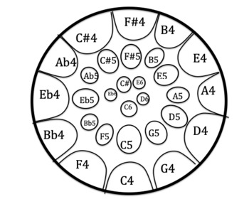
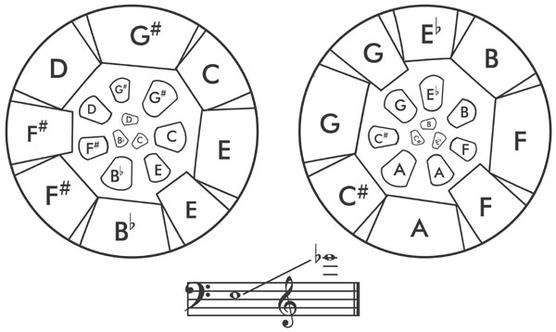
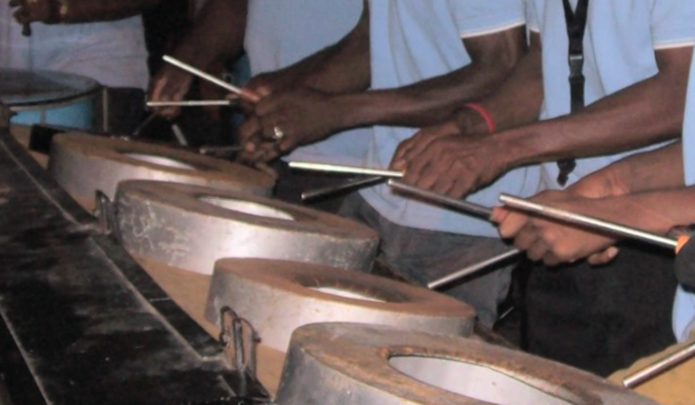

the notes are situated so that each note is surrounded by overtones that aren't dissonant
also they tune the edges of each note to play the octave of the fundamental pitch (i.e. you play the C4 note, and the C5 upper note will quietly ring too)
they also have the fifth of each note in between fundamental notes
tenor pan is fully chromatic because any note in any scale can be played, see image below
(turn up your volume) (click yellow bubble to hear F#4) (click red bubble to hear F#6 overtones)

double tenor has lower notes available but it needs two pans to have the same number of notes as the tenor pan

engine room is the percussion section in a steelband
iron players. drives the band the entire time. loud; metal on metal

hand percussion
congas
drum set: plays established bass rhythm
in soca and calypso, that bass rhythm is ./../../.
Here's a video that displays how this rhythm sounds on drumset:
Ugandan music styles & instruments
Bakisimba is a dance/rhythm meant to be played at traditional weddings and royal ceremonies (source 8). Milton Wabyona, founder and executive director of Uganda Heritage Roots rehabilitation program, discussed the details of this drumming style, and here are the takeaways (source 7):
First drum of the bakisimba set is Embuutu (also called the bakisimba drum), which is the main rhythmic drum.
Second drum is empuunya, which is the bass drum that’s responsible for the central beat. Listen to the Bakisimba rhythm on this drum in the video below (bass drum rhythm starts at 50 second mark):
The next instrument used is the Engalabi, a long drum (open drum) which plays the percussive parts and outlines the motifs for the dancers to follow.
The last drum is the Namunjoloba: two small drums that can be used like the long drum to make the calls for changes in the dance
Ensaasi are also incorporated into Bakisimba playing: they are shakers made from hallow gourds with seeds in them
The Embaire is a xylophone-like instrument played in traditional Ugandan music. It is very large and several people play it at once in a collaborative manner. See it in action in the video below: